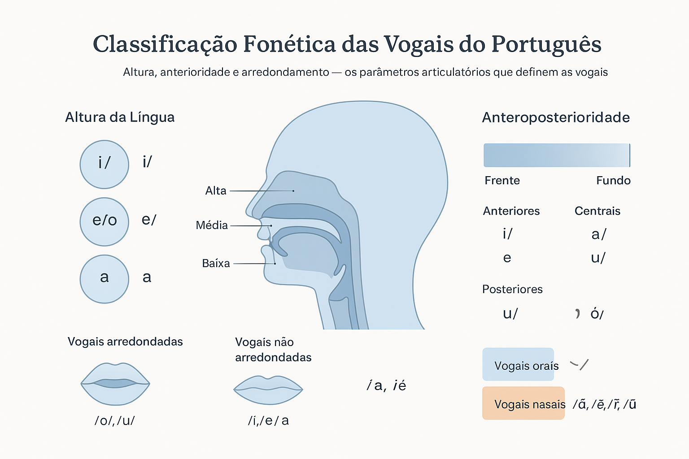

Classificação Fonética Detalhada das Vogais
As vogais são sons produzidos com a passagem livre do ar pela cavidade bucal, sem obstáculos significativos causados pela língua, lábios ou dentes. Elas são o núcleo das sílabas e constituem a base sonora da maioria das palavras. A fonética estuda esses sons em detalhes, classificando as vogais segundo características articulatórias que envolvem a posição da língua, a forma dos lábios e a participação das cavidades bucal e nasal na produção do som.
1. Critérios de Classificação das Vogais
As vogais podem ser classificadas com base em três parâmetros principais:
- Altura da língua (ou grau de abertura da boca);
- Anteroposterioridade (posição da língua no eixo horizontal);
- Arredondamento dos lábios (forma dos lábios durante a emissão);
Além desses critérios articulatórios, as vogais também podem ser distinguidas quanto à nasalidade e à abertura (abertas ou fechadas). A seguir, veremos cada uma dessas classificações de forma detalhada.
2. Altura da Língua: vogais altas, médias e baixas
A altura da língua indica o quanto ela se eleva dentro da cavidade bucal durante a articulação da vogal. Esse movimento define o grau de abertura da boca.
- Vogais altas (ou fechadas): a língua está próxima do palato. Exemplos: /i/, /u/.
- Vogais médias: a língua está numa posição intermediária. Exemplos: /e/, /o/.
- Vogais baixas (ou abertas): a língua está em posição baixa, e a boca mais aberta. Exemplo: /a/.
Na prática, esse critério está diretamente ligado à sensação de abertura da boca: quanto mais aberta a boca, mais “baixa” é a vogal.
3. Anteroposterioridade: vogais anteriores, centrais e posteriores
A anteroposterioridade descreve a posição da língua no eixo horizontal da cavidade bucal, isto é, se o som é articulado mais à frente, ao centro ou ao fundo da boca.
- Vogais anteriores: a língua se projeta para a frente. Exemplos: /i/, /e/.
- Vogais centrais: a língua fica numa posição intermediária. Exemplo: /a/.
- Vogais posteriores: a língua se desloca para trás. Exemplos: /u/, /o/.
Essa diferença de posição é fundamental para distinguir sons como /e/ e /o/, que se articulam em zonas opostas da cavidade bucal.
4. Arredondamento dos Lábios
Durante a produção de algumas vogais, os lábios podem assumir uma forma arredondada ou não. Esse aspecto é conhecido como arredondamento labial.
- Vogais arredondadas: os lábios se projetam e formam um círculo, como em /o/ e /u/.
- Vogais não arredondadas: os lábios permanecem relaxados, como em /i/, /e/ e /a/.
O arredondamento é uma característica perceptível na fala e varia conforme o idioma. No português, apenas as vogais posteriores (/o/, /u/) são arredondadas.
5. Vogais Orais e Nasais
Outro aspecto fundamental da classificação das vogais é a participação da cavidade nasal na emissão do som. Dependendo de o ar escapar ou não pelo nariz, as vogais podem ser:
- Orais: o ar sai apenas pela boca. Exemplos: /a/, /e/, /i/, /o/, /u/.
- Nasais: parte do ar também passa pela cavidade nasal. Exemplos: /ã/, /ẽ/, /ĩ/, /õ/, /ũ/.
No português, a nasalidade ocorre principalmente em contextos em que há uma consoante nasal próxima (como “mão”, “pente”, “bom”) ou em finais de sílaba, transformando a vogal oral em nasalizada.
6. Vogais Abertas e Fechadas
A classificação em abertas e fechadas relaciona-se ao grau de abertura da boca e à altura da língua. Essa diferença é relevante em português, pois distingue palavras com sentidos diferentes.
- Vogais abertas: apresentam maior abertura da boca e posição mais baixa da língua. Exemplos: /ɛ/ (é), /ɔ/ (ó).
- Vogais fechadas: têm menor abertura e posição mais alta da língua. Exemplos: /e/ (ê), /o/ (ô).
Observe que, em palavras como “avó” e “avô”, a distinção entre vogais abertas e fechadas muda completamente o significado.
7. Quadro Resumo das Vogais do Português
| Altura | Anterior | Central | Posterior |
|---|---|---|---|
| Alta | /i/ | — | /u/ |
| Média | /e/, /ɛ/ | — | /o/, /ɔ/ |
| Baixa | — | /a/ | — |
8. Conclusão
A classificação fonética das vogais permite compreender de forma precisa como cada som é articulado e percebido. Esses critérios — altura, anterioridade, arredondamento, nasalidade e abertura — são essenciais para o estudo da fonética e da fonologia, auxiliando na descrição científica dos sons da língua portuguesa e no aprimoramento da pronúncia e da compreensão linguística.
“O estudo articulatório das vogais revela a harmonia entre o corpo e o som: língua, lábios e ar se coordenam para formar a musicalidade da fala.”